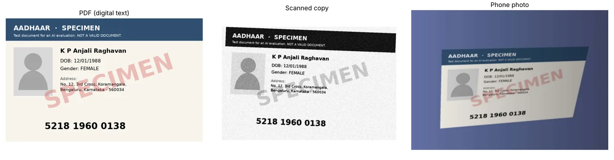

Auto-accept an AI-read PAN or Aadhaar only if it passes free format checks and has confidence of at least 0.95. On 72 test uploads this auto-accepted 96% with zero wrong documents let through. The model's own confidence could not have caught the errors.
In UAT on a lending platform, I found that OCR read KYC fields correctly from PDFs but failed on scanned copies. Borrowers on the upload path send scans and phone photos, not clean PDFs.
Borrowers who reach the upload fallback because DigiLocker, Aadhaar OTP and CKYC didn't work for them, and the ops reviewers who check flagged documents.
A wrong PAN that passes silently is a fraud and compliance risk. Reviewing everything by hand is slow and costly. So the real question is which documents can we safely auto-accept?
12 fictional people and 24 specimen documents (12 PAN, 12 Aadhaar), each saved as a digital PDF, a simulated scan and a simulated phone photo: 72 uploads with a ground-truth answer key and no real data. I built in the hard cases on purpose: names with initials, look-alike characters (O and 0, I and 1, S and 5, B and 8), and dates where the day and month are both 12 or less.
Model: Gemini 3.5 Flash-Lite, the low-cost tier a lender would run at volume. One structured-output prompt, locked before the run, and each file sent once (run on 29 Oct 2026). Every field scored by exact match. A document counts as correct only if every decision field is right.

| Input type | Field accuracy | Document accuracy (95% range) | Cost per document |
|---|---|---|---|
| 100% (120/120) | 100% (24/24), 86–100% | ₹0.10 | |
| Scanned copy | 98% (118/120) | 92% (22/24), 74–98% | ₹0.12 |
| Phone photo | 98% (118/120) | 96% (23/24), 80–99% | ₹0.12 |
All 4 errors were look-alike characters: the letter O at the end of a PAN read as zero three times (2 scans, 1 photo), and B read as 8 in one address. The address is not a decision field.
The insight: every one of the 4 wrong values came back with confidence 1.0, while correct values averaged 0.995. Confidence couldn't separate good reads from bad ones, so it can't be the gate on its own.
| Rule (threshold 0.95) | Auto-accepted | Wrong documents let through |
|---|---|---|
| A. Confidence only | 100% (72/72) | 3 (4.2%) |
| B. Format checks + confidence (chosen) | 96% (69/72) | 0 |
Rule A let all 3 errors through at every threshold up to 0.99. Rule B caught them because a PAN must end in a letter. The 3 documents it sent to a person were exactly the 3 misread PANs.
The model rated almost every field 0.99 or 1.0, so with format checks on, every threshold from 0.50 to 0.95 gave the same result: 69 of 72 auto-accepted, zero wrong. At 0.97 auto-accept fell to 68 of 72 with no extra safety. I picked 0.95, the strictest setting that cost nothing, to keep a margin in case a future model or harder documents bring confidence down. The notebook's own pick was 0.50, because it breaks ties with the lowest value.
Trade-off: Rule B sends 3 more uploads to a person (4% more manual review) to stop 3 wrong PANs. Format checks are free to run, and a wrong auto-accept costs far more than a review.